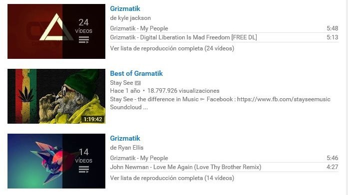
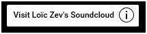
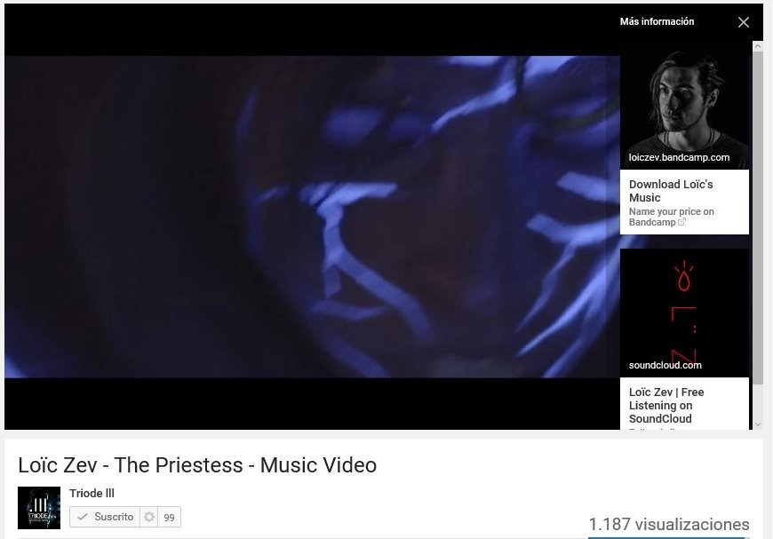

1.- Crea tus propias playlists
Cuando alguien busca algo en YouTube, obtiene resultados de varios tipos. El tipo más común son los videos, pero también hay canales y playlists.
No puedes (o al menos no debes) hacer muchos canales para tener más views, pero sí puedes hacer playlists. Imagina esta situación:
Ripley es una chica a la que le gusta el dubstep, pero está cansada de escuchar sólo Skrillex, así que se mete a YouTube y busca “Dubstep”. Entre los resultados, encuentra una playlist que se llama “Best Dubstep Songs of 2016”. “¡Perfecto!”, piensa Ripley. “No tengo que preocuparme por poner canción tras canción porque alguien ya escogió las mejores. ¡De hecho hay unas que conozco y sí son bastante buenas!”
Lo que no sabe Ripley es que Peter, un músico astuto, hizo la playlist con sus canciones favoritas, pero también metió algunas que él hizo. Si la música de Peter es buena, Ripley estará agradecida de haberla encontrado y Peter habrá ganado una nueva fan. Imagina que una playlist es un concierto en el que vas a tocar y puedes invitar a cualquier banda que quieras a tocar también. La pregunta es ¿a qué bandas invitas y qué nombre le pones al concierto para que te escuche la gente indicada?
2.- Buttons. Buttons everywhere.
Esto es típico: entras a YouTube a buscar cómo instalar un plugin y 30 minutos después estás viendo videos de FailArmy o de PeopleAreAwesome y no tienes idea de cómo llegaste ahí. Sí, tiene que ver con que eres distraído, pero también con que YouTube está diseñado para que veas video tras video. Entre más videos vean sus usuarios, YouTube puede mostrar más publicidad y ganar más dinero. Por esto, YouTube les da herramientas a sus creadores de contenido (incluyendo músicos) para atrapar a sus espectadores. Las siguientes son unas de las más efectivas:
2.1 Tarjetas
Una tarjeta aparece en la esquina superior derecha de un video durante 5 segundos y se ve así:
Obviamente, puedes cambiar el texto… aunque Loïc seguro te agradecería la promoción.
Al hacer click en las tarjetas, despliegan un poco más de información y botones que llevan (casi) a donde tú quieras. En este video, pusimos dos tarjetas. Una a BandCamp y la otra a SoundCloud.
Hay cuatro tipos de tarjetas. Puedes usarlas para llevar a la gente a otros videos tuyos, a una playlist, a tu canal, a una página de internet (aunque no a cualquiera) e incluso puedes hacer una votación, por si quieres saber qué miembro de tu banda es el más guapo. Hay una herramienta similar a las tarjetas, que con un poco más de trabajo puede darte mejores resultados.
2.2 Anotaciones
Las anotaciones te permiten poner texto y botones en el video. Mucha gente las usa mal y termina con videos llenos de estorbos visuales, pero hay formas elegantes y efectivas de usarlas. En los créditos de la sesión que le hicimos a Loïc Zev, pusimos recuadros con clips de sus otros videos y sobre ellos montamos anotaciones clickables que llevaban a ellos. El resultado es un videobotón más llamativo que los thumbnails de los videos relacionados. Checa el final del video:
Ojo: El video que subas a YouTube ya tiene que tener los clips. Los botones son transparentes.
3.- Buenos videos con poco dinero
Hay tres tipos de interacción con la música en YouTube:
- - Cuando la persona ve el video mientras escucha la música
- - Cuando el video está de fondo en alguna pantalla
- - Cuando de plano la ventana está minimizada
Un videoclip bien hecho no es barato y da coraje gastar en un video que la gente casi no ve. Por eso tienes que aprender a hacer que más gente vea tus videos, pero también tienes que aprender a aceptar que a veces la gente sólo quiere la música. Por eso muchos artistas ponen sólo la portada del disco. Sin embargo, hay un tipo de video que es mucho más barato que un videoclip y que es más atractivo que una simple imagen. Chécate este ejemplo de MonsterCat, una de las disqueras virtuales más hot de música electrónica:
Todos sus videos son así. En morado, amarillo o verde, con distintos títulos, pero básicamente iguales y les funciona muy bien porque es barato y de buena calidad. Hasta se ha vuelto parte de su identidad.
(En Nostromo te podemos ayudar a hacer un video así desde $X,000. Checa la página del producto aquí.)
Esperamos que te sirvan estos tips. Si quieres ver más artículos como éste, síguenos en Facebook o suscríbete a nuestra mailing list. Te enviaremos contenido exclusivo e invitaciones a los eventos de Nostromo.